In-Between — p2p-маркетплейс аренды дизайнерской и винтажной мебели, построенный вокруг того, что все остальные обходят стороной: доверия между двумя незнакомцами, передающими друг другу ценную вещь.
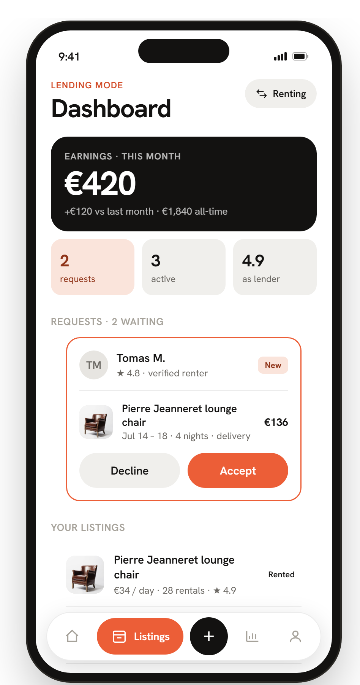
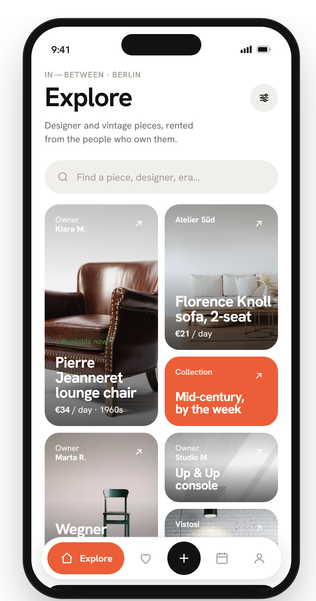
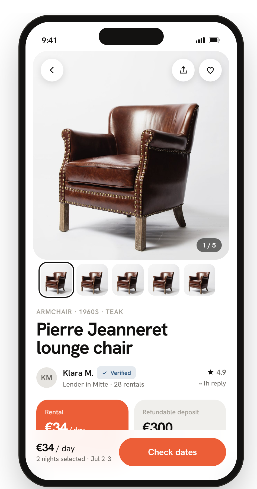
Аренда мебели быстро растёт — примерно 7–12% в год — за счёт городской мобильности, привычки снимать, а не покупать, отказа поколения Z от владения и моды на циркулярную экономику. Около 60% бронирований уже происходит с телефона.
Но крупные игроки — Feather, Furlenco, CORT, Rentomojo — работают по одной и той же складской модели: компания владеет мебелью и сдаёт её. Сегмент p2p — когда люди сдают друг другу собственные дизайнерские вещи, Airbnb для мебели — почти пуст.
В этом разрыве — возможность. И там же живёт настоящая дизайн-задача: двусторонний флоу, физическое состояние вещи, переходящее из рук в руки, и деньги, замороженные посередине.
Ориентировочные отраслевые оценки — чтобы очертить возможность, а не как точные цифры.
Арендуя у компании, вы доверяете одной стороне — бренду. P2P убирает эту опору: теперь есть два человека, кресло за €2000 и дата возврата. Состояние вещи переходит из рук в руки, депозит висит в неопределённости, и один спор может отравить всю сделку.
Гипотеза — если платформа делает доверие видимым (доказательства, эскроу, понятный статус, честное описание дефектов), два незнакомца передадут друг другу дорогую вещь без единого телефонного звонка.
Владеть складом — задача снабжения.
Владеть доверием — задача дизайна.
Как в Airbnb, один человек — обе стороны рынка. Эта двойственность определяет навигацию и всю компонентную модель: одно и то же бронирование должно одинаково ясно читаться с двух противоположных точек зрения.
Временное жильё · стилисты и фотографы со съёмками на несколько дней · ивент-менеджеры · «пожить с дорогим креслом до покупки».
Коллекционеры и энтузиасты дизайна с простаивающими вещами · винтажные продавцы и небольшие шоурумы · те, кто переезжает и скорее сдаст, чем продаст.
Платформа — молчаливая третья сторона: эскроу, депозит, страховка и медиация. Она присутствует везде как бейджи и статусы — и никогда как отдельный экран.
Пять вкладок несут опыт арендатора. Переключение в режим владельца не открывает другой продукт — оно переокрашивает контекст: Rentals становится Listings, и появляется дашборд владельца. Одна личность, два режима, одна ментальная модель.
Полная архитектура покрывает ~38 экранов: онбординг, каталог, бронирование, активная аренда, состояние, сдача и системные. Десять доведены до hi-fi — полный happy path и один sad path, остальные описаны на уровне архитектуры.
каталог
коллекции
разместить вещь
↔ Listings
+ переключатель режима
Как дать одному человеку и искать, и сдавать — не выпуская два приложения? Бронирование — единый объект, который должен идеально читаться с обеих сторон: запрос арендатора — это решение во входящих владельца.
Решение — переключатель режима в профиле переокрашивает весь контекст. Одно и то же бронирование отображается как сводка цены для арендатора и карточка «принять / отклонить» для владельца. Один компонент, две правды.
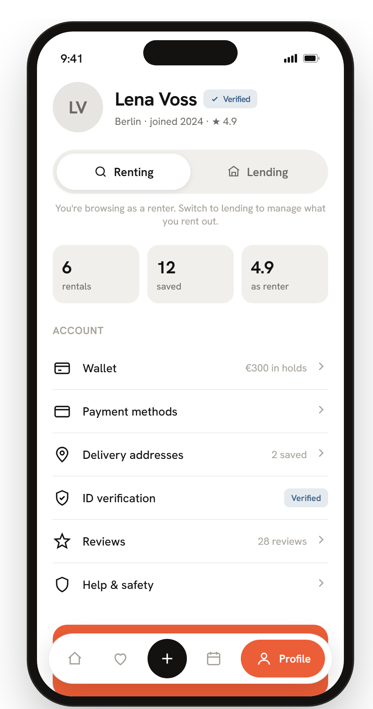
Самый страшный момент в p2p — «вы её повредили». Чьё слово весит больше? UX должен разрядить конфликт до того, как он случится.
Решение — единая петля доверия. Владелец честно описывает дефекты при размещении → арендатор делает фотофиксацию с таймстампом при получении → спор решается доказательствами «до / после» в подчёркнуто нейтральном тоне. Факты, а не поиск виноватых.
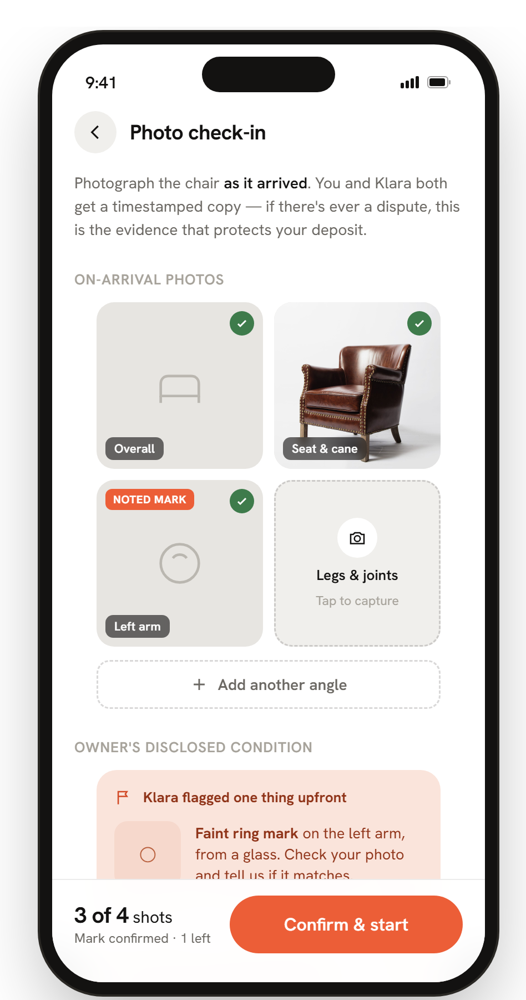
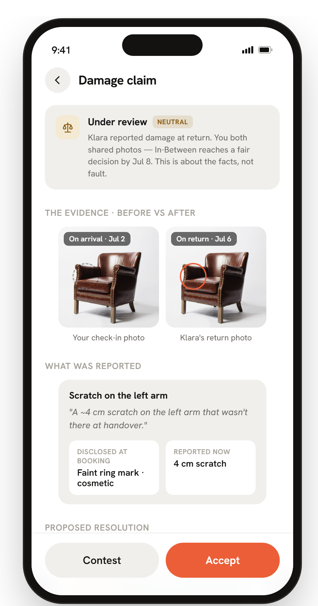
Аренда, сервисный сбор, депозит, доставка, страховка — пять цифр на один тревожный тап. А вопрос «когда мне вернут мои €300?» убивает конверсию.
Решение — прозрачная переиспользуемая разбивка цены и депозит, который холдируется, а не списывается: он лежит в эскроу, возвращается через 48 часов после возврата и показан маленьким таймлайном — путь денег никогда не загадка.
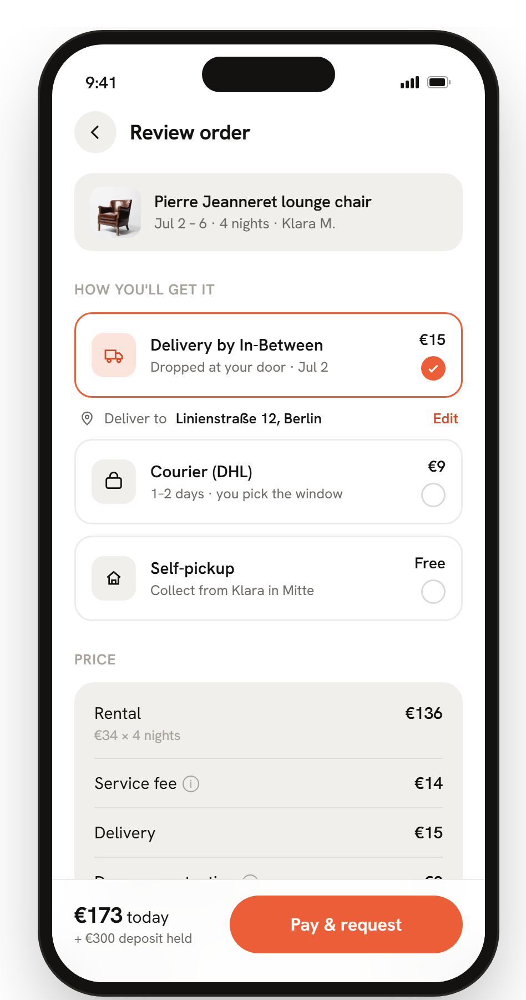
Задание было про системное мышление, поэтому визуальный язык намеренно сдержан: тёплые нейтральные поверхности, почти чёрные «чернила», один коралловый акцент и одна гротескная гарнитура на всех ролях — от подписей в 12px до цифр в 54px. Каталог собран на bento-плитках; всё остальное — небольшой повторяемый набор.
Одна аренда — один словарь статусов: цвет + иконка + подпись, одинаково везде:
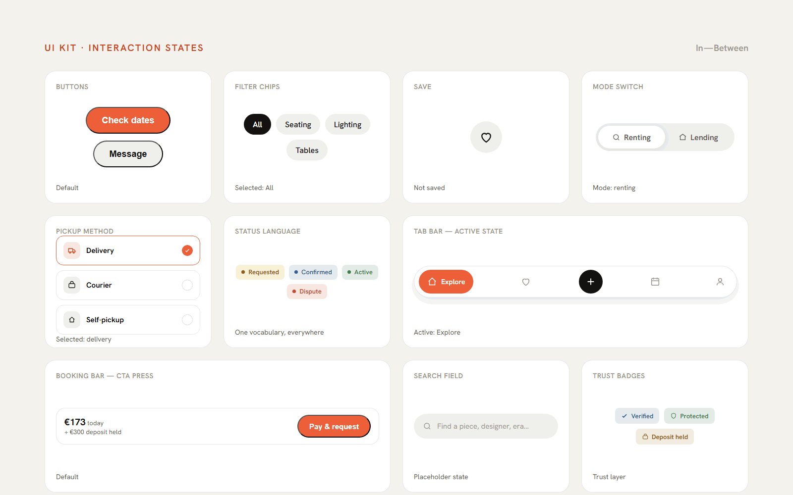
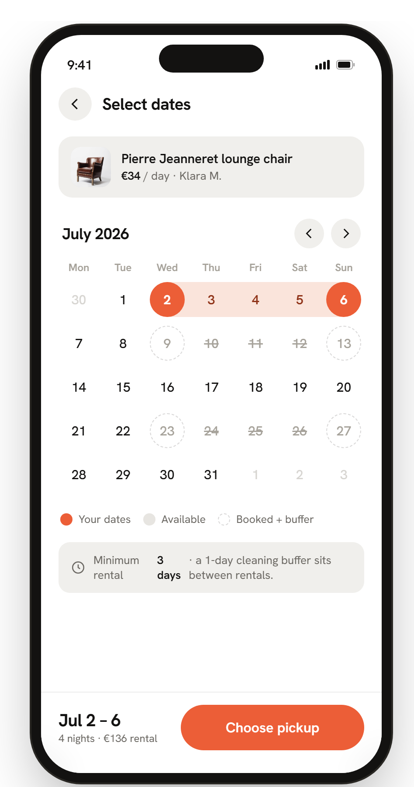
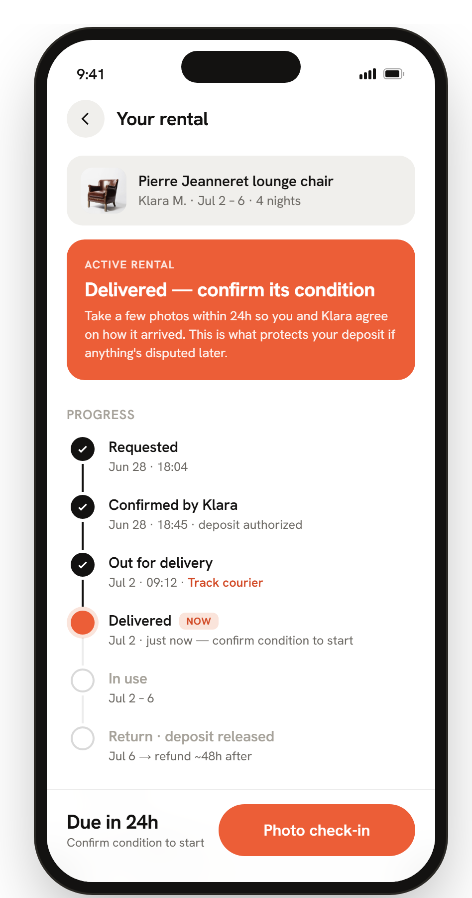
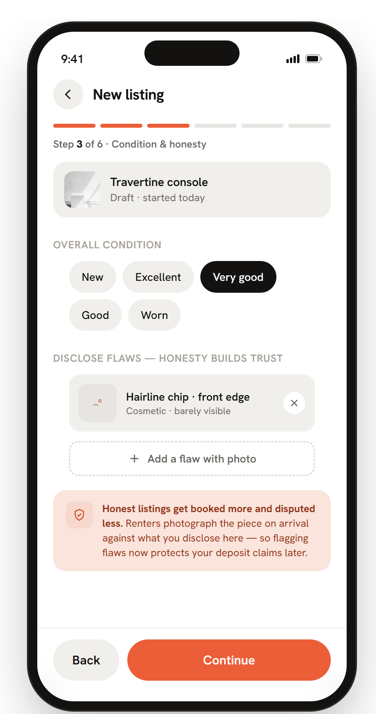
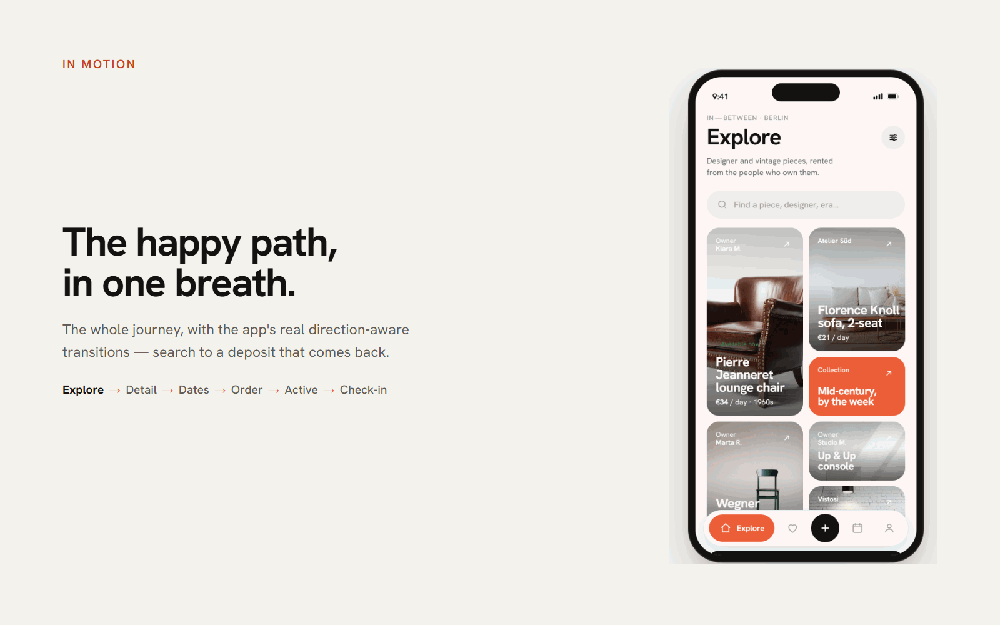
Это настоящий кликабельный прототип, а не видео. Пройдите флоу, вокруг которых построен кейс:
Каталог → товар → даты → заказ → запрос → активная аренда → фотофиксация.
Фотофиксация → «сообщить о проблеме» → заявка с доказательствами «до / после».
Профиль → режим владельца → дашборд, запросы, создание объявления.